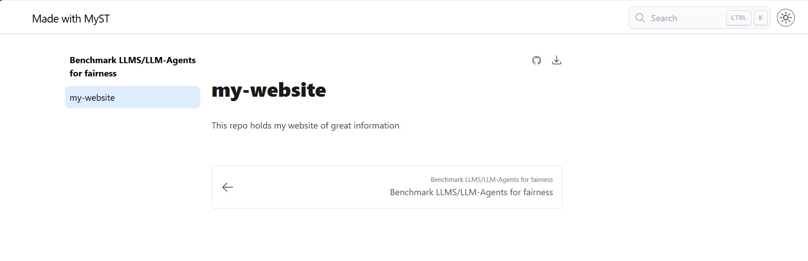
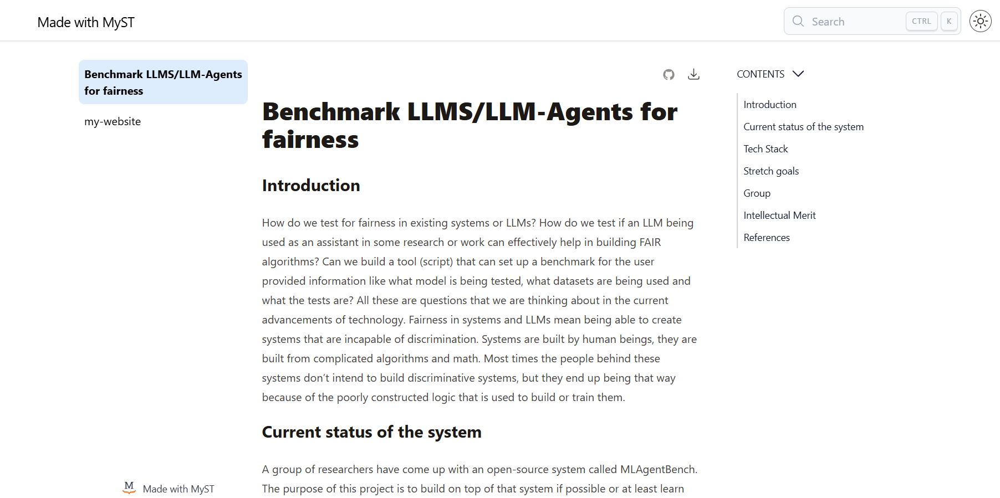
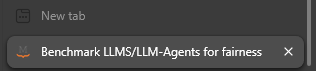
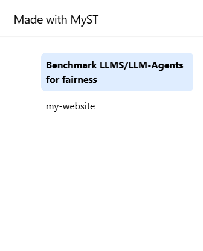
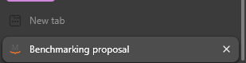
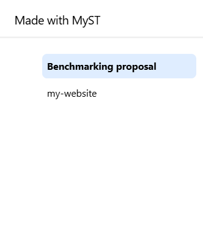

What-is-myst
Last updated on 2025-10-14 | Edit this page
Estimated time: 12 minutes
Overview
Questions
- How can we build an interactive webpage using Markdown files?
- How do we initialize myst?
- What does myst need to run?
- How do I view my work?
Objectives
- Explain what myst is and its benafits
- Run myst for the first time
- Check myst requirments
- View the webpage we built locally
Remember to address feedback from the previous session
Today is when everything we’ve learned comes together. - We’ve talked about GitHub - We’ve seen GitHub pages convert markdown to HTML - We got introduced to the shell of our operating systems - And we’ve learned how to manipulate files and data in the shell
Introduction
MyST is an open-source, community-driven project to improve scientific communication, including integrations into Jupyter Notebooks and computational results. (Sourced from mystmd.org’s Project goals)
Myst is a tool that we will learn to use to build interactive webpages or pdfs. The benifit of this is more powerful publishing of content and information. Here’s an example of a paper published using myst: A Literature Review On AI fairness Best Practices
Show dynamic glossary items and links - Header - Tables of contents - AI in intro vs AI in Technical challenges - Links to articles - Table in Fair-learn - Table in Synthesis of Frameworks
A Different Way of Building HTML
The purpose of MyST is to have a powerful tool that builds
interactive HTML pages without doing any HTML coding. Remember, on the
first day we used GH Pages’ simple rendering system to render a single
md file (index.md) into a simple HTML page. MyST can also
do this, except that it uses templates to render pages with a more
structure, does some extra processing of the content and it can render a
collection of md files distributed across multiple directories within
one project directory into a cohesive site.
Let’s learn about using myst on the simple repo we created on the first day.
Starting myst
Open your terminal and cd into your
my-website repo’s directory Type the command
code into your terminal
Quick rundown on vscode view. If code doesn’t work (problems with path) open vscode manually
Notice how you can access your terminal directly from vscode too!
In your terminal type myst:
Welcome to the MyST CLI! 🎉 🚀
myst init walks you through creating a myst.yml file.
You can use MyST to:
- create interactive websites from markdown and Jupyter Notebooks 📈
- build & export professional PDFs and Word documents 📄
Learn more about this CLI and MyST Markdown at: https://mystmd.org
✅ Project already initialized with config file: myst.yml
✅ Site already initialized with config file: myst.yml
? Would you like to run myst start now? Answer the prompt with yes
? Would you like to run myst start now? Yes📖 Built README.md in 62 ms.
📖 Built index.md in 364 ms.
📚 Built 2 pages for project in 482 ms.
✨✨✨ Starting Book Theme ✨✨✨
🔌 Server started on port 3000! 🥳 🎉
👉 http://localhost:3000 👈
╭────────────────────────────────────────────╮
│ │
│ Update available! v1.5.1 ≫ v1.6.0 │
│ │
│ Run `pip install -U mystmd` to update. │
│ │
│ Follow @mystmd.org for updates! │
│ https://bsky.app/profile/mystmd.org │
│ │
╰────────────────────────────────────────────╯This tells you that all the files that were in your directory (README.md & index.md) were built into a website locally.
Locally means this content is hosted on your machine. Not published for the public to be able to access.
To view this website follow the link provided in the prompt:
http://localhost:3000
If your port 3000 was already occupied you might get a
different number
What did this do?
Firstly we notice that the files in the directory got increased by 1. The new file is called myst.yml as mentioned by the output from the command we ran.
If we opened the webpage using the link above we see somthing like this

We notice a few things on this page:
- On the top-left corner says Made with Myst - For each md
file we have a button on the left page section - On the top-right corner
we have a dark/light theme button as well as a search bar that
works!
Edit your readme file and see what happens
We notice how myst tracks all requests on the local host and applies the changes made to the readme file immedietly to the webpage
OUTPUT
💌 GET /readme?_data=routes%2F%24 200 - - 9.687 ms
📖 Built README.md in 57 ms.
💌 GET /readme 200 - - 18.691 msWhat does that tell us?
We were able to create an interactive webpage using the same markdown
files and turn them into an interactive page. We used the
myst tool to make the webpage look nicer and have more
powers.
We also notice that with every change we make the contents of the
_build folder get rebuilt to generate the
newly updated material and settings. And we see a large number of files
in there that we might want to hide from the front face of our GitHub
repo.
What did myst need to run?
We noticed earlier that myst added a file to our directory as soon as
we ran it. myst.md Let’s figure out why it did so by
viewing the contents of it and trying to understand it.
or view it using vscode
YAML
# See docs at: https://mystmd.org/guide/frontmatter
version: 1
project:
id: 5f256b79-5f82-4a71-b061-138da64f191a
# title:
# description:
# keywords: []
# authors: []
github: https://github.com/mystudyroom0/my-website
# To autogenerate a Table of Contents, run "myst init --write-toc"
site:
template: book-theme
# options:
# favicon: favicon.ico
# logo: site_logo.pngWe find that the the file holds some metadata for the webpage. Most
of it isn’t filled in and is also commented out since it isn’t filled
out yet. (we comment lines in the YAML syntax using the #
symbol). We also some site settings such as the theme, logo and icon. So
we learn that myst requires this file to be in your project directory to
be able to built the webpage.
Editing meta data
Change the title of your webpage from the myst.yml file
and observe the difference before and after
Let’s look at how the tab is labeled on the browser and what the page title looks like

Edit the metadata of your webpage from myst.yml. Remove
the # to uncomment the line that has title: in
it and then add a title to your webpage.
YAML
# See docs at: https://mystmd.org/guide/frontmatter
version: 1
project:
id: b9be35e6-0f75-4da5-b971-9add4d00ed44
title: Benchmarking proposal
# description:
# keywords: []
# authors: []
github: https://github.com/some-humanist/my-website
# To autogenerate a Table of Contents, run "myst init --write-toc"
site:
template: book-theme
# options:
# favicon: favicon.ico
# logo: site_logo.png
- Myst is a tool that builds interactive webpages from markdown files
- To built a webpage using myst we simply start myst on the terminal
- Myst requires the file
myst.mdto run and build a webpage